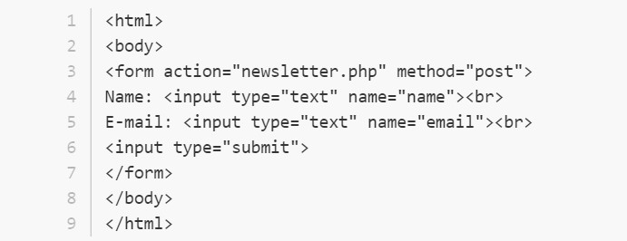

Este método se usa cuando se necesita enviar información o un elemento al servidor y que lo enviado sea almacenado
como un “hijo” o subelemento de un elemento o recurso ya existentes en el servidor. Este tipo de método se usa
principalmente en el envío de formularios que se encuentran en las páginas web.
Por ejemplo se tiene un formulario que recoge un nombre y una dirección de correo electrónico y lo envía al servidor
por medio de POST:
